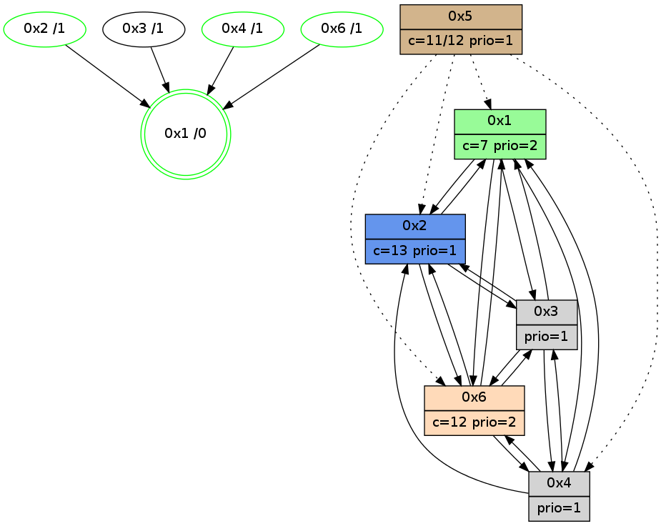

>> << IDX [start] -100 -25 -5 +0 +5 +25 +100 [1055.22960496]
 Previous packets
----------------------------------------------------------------------
1050.308519 beacon01(adaf) #0 coord=01,02,05,03,04,06 cycle=432.0ms assoc
-- color-indic=1 64 a4 9b
1050.318480 beacon02(adaf) #0 coord=01,02,05,03,04,06 cycle=432.0ms assoc 64 f5 64
1050.328480 beacon05(adaf) #0 coord=01,02,05,03,04,06 cycle=432.0ms assoc 64 53 4e
1050.338481 beacon03(adaf) #0 coord=01,02,05,03,04,06 cycle=432.0ms assoc 64 cf 6a
1050.348481 beacon04(adaf) #0 coord=01,02,05,03,04,06 cycle=432.0ms assoc 64 69 40
1050.358481 beacon06(adaf) #0 coord=01,02,05,03,04,06 cycle=432.0ms assoc 64 1d 5c
1050.370238 [Hello(2): seq=1345 sym=6,1 sysInfo=hasWarning stat=6:9,6,3,3/1:8,7,14,0]
1050.372635 [Hello(6): seq=770 sym=4,2,1,3 sysInfo=hasWarning stat=4:13,8,9,1/2:4,8,1,0/1:15,1,6,1/3:8,3,9,9]
1050.375392 [Hello(1): seq=757 sym=2,4,6,3 sysInfo=hasWarning,coloring-mode-on,ColoringModeRequestCalled stat=2:3,1,1,0/4:0,2,1,0/6:11,8,6,4/3:3,0,4,1]
1050.377527 [STC(6)->1 #0.167 new-neigh,tree-change,inconsistent-stability,stable,to-color d=1]
1050.379436 [Hello(3): seq=855 sym=6,2,1,4 sysInfo=hasWarning stat=6:5,6,10,3/2:5,7,2,0/1:2,1,6,1/4:6,8,2,0]
1050.382276 [STC(3)->1 #0.167 new-neigh,tree-change,inconsistent-stability,to-color d=1]
1050.389368 [TreeStatus(6)-.->1 #0.167 new-neigh,tree-change,inconsistent-stability,stable child=1]
1050.393133 [Color(6) seq=242 @0:0 color=12 prio=2 c=7,d,e;1,4,6,8,9,b]
----------------------------------------------------------------------
1050.800628 beacon01(adaf) #0 coord=01,02,05,03,04,06 cycle=432.0ms assoc
-- color-indic=1 64 60 f4
1050.810588 beacon02(adaf) #0 coord=01,02,05,03,04,06 cycle=432.0ms assoc 64 31 0b
1050.820588 beacon05(adaf) #0 coord=01,02,05,03,04,06 cycle=432.0ms assoc 64 97 21
1050.830588 beacon03(adaf) #0 coord=01,02,05,03,04,06 cycle=432.0ms assoc 64 0b 05
1050.840590 beacon04(adaf) #0 coord=01,02,05,03,04,06 cycle=432.0ms assoc 64 ad 2f
1050.850589 beacon06(adaf) #0 coord=01,02,05,03,04,06 cycle=432.0ms assoc 64 d9 33
1050.863071 [Hello(4): seq=857 sym=2,1,6,3 sysInfo=hasWarning stat=2:7,7,2,0/1:8,15,11,0/6:14,2,15,6/3:0,10,8,2]
1050.866204 [Color(4) seq=138 @0:0 prio=1 c=7,c;1,4,6,8,9,b,d,e]
1050.867851 [Color(1) seq=284 @0:0 color=7 prio=2 c=1,4,6,8,9,b,c,d;0,2,3,5,a,e]
1050.872406 [Color(2) seq=244 @0:0 color=13 prio=1 c=7,c,e;1,4,6,8,9,b]
----------------------------------------------------------------------
1051.292735 beacon01(adaf) #0 coord=01,02,05,03,04,06 cycle=432.0ms assoc
-- color-indic=1 64 2d f3
1051.302698 beacon02(adaf) #0 coord=01,02,05,03,04,06 cycle=432.0ms assoc 64 7c 0c
1051.312697 beacon05(adaf) #0 coord=01,02,05,03,04,06 cycle=432.0ms assoc 64 da 26
1051.322697 beacon03(adaf) #0 coord=01,02,05,03,04,06 cycle=432.0ms assoc 64 46 02
1051.332697 beacon04(adaf) #0 coord=01,02,05,03,04,06 cycle=432.0ms assoc 64 e0 28
1051.342697 beacon06(adaf) #0 coord=01,02,05,03,04,06 cycle=432.0ms assoc 64 94 34
1051.353898 [Hello(1): seq=758 sym=2,4,6,3 sysInfo=hasWarning,coloring-mode-on,ColoringModeRequestCalled stat=2:3,2,1,0/4:0,2,1,0/6:11,9,7,5/3:4,0,5,1]
1051.356575 [Hello(6): seq=771 sym=4,2,1,3 sysInfo=hasWarning stat=4:14,9,9,1/2:5,9,1,0/1:15,2,6,1/3:8,3,9,9]
1051.359699 [Color(6) seq=243 @0:0 color=12 prio=2 c=7,d,e;1,4,6,8,9,b]
----------------------------------------------------------------------
1051.784843 beacon01(adaf) #0 coord=01,02,05,03,04,06 cycle=432.0ms assoc
-- color-indic=1 64 e9 9c
1051.794803 beacon02(adaf) #0 coord=01,02,05,03,04,06 cycle=432.0ms assoc 64 b8 63
1051.804804 beacon05(adaf) #0 coord=01,02,05,03,04,06 cycle=432.0ms assoc 64 1e 49
1051.814804 beacon03(adaf) #0 coord=01,02,05,03,04,06 cycle=432.0ms assoc 64 82 6d
1051.824804 beacon04(adaf) #0 coord=01,02,05,03,04,06 cycle=432.0ms assoc 64 24 47
1051.834804 beacon06(adaf) #0 coord=01,02,05,03,04,06 cycle=432.0ms assoc 64 50 5b
1051.847128 [Color(1) seq=285 @0:0 color=7 prio=2 c=1,4,6,8,9,b,c,d;0,2,3,5,a,e]
1051.850923 [Hello(4): seq=858 sym=2,1,6,3 sysInfo=hasWarning stat=2:7,8,2,0/1:9,0,11,0/6:15,3,15,6/3:1,10,8,2]
1051.852959 [Color(2) seq=245 @0:0 color=13 prio=1 c=7,c,e;1,4,6,8,9,b]
1051.854686 [Color(4) seq=139 @0:0 prio=1 c=7,c;1,4,6,8,9,b,d,e]
----------------------------------------------------------------------
1052.276954 beacon01(adaf) #0 coord=01,02,05,03,04,06 cycle=432.0ms assoc
-- color-indic=1 64 a5 2c
1052.286917 beacon02(adaf) #0 coord=01,02,05,03,04,06 cycle=432.0ms assoc 64 f4 d3
1052.296916 beacon05(adaf) #0 coord=01,02,05,03,04,06 cycle=432.0ms assoc 64 52 f9
1052.306916 beacon03(adaf) #0 coord=01,02,05,03,04,06 cycle=432.0ms assoc 64 ce dd
1052.316916 beacon04(adaf) #0 coord=01,02,05,03,04,06 cycle=432.0ms assoc 64 68 f7
1052.326917 beacon06(adaf) #0 coord=01,02,05,03,04,06 cycle=432.0ms assoc 64 1c eb
1052.338072 [Hello(1): seq=759 sym=2,4,6,3 sysInfo=hasWarning,coloring-mode-on,ColoringModeRequestCalled stat=2:4,3,1,0/4:1,3,1,0/6:12,10,7,5/3:4,0,5,1]
1052.340742 [Hello(6): seq=772 sym=4,2,1,3 sysInfo=hasWarning stat=4:15,10,9,1/2:5,10,1,0/1:0,3,6,1/3:9,3,9,9]
1052.343866 [Color(6) seq=244 @0:0 color=12 prio=2 c=7,d,e;1,4,6,8,9,b]
1052.345334 [STC(1) #0.168 new-neigh,tree-change,inconsistent-stability,stable,to-color d=0]
----------------------------------------------------------------------
1052.769064 beacon01(adaf) #0 coord=01,02,05,03,04,06 cycle=432.0ms assoc
-- color-indic=1 64 61 43
1052.779025 beacon02(adaf) #0 coord=01,02,05,03,04,06 cycle=432.0ms assoc 64 30 bc
1052.789024 beacon05(adaf) #0 coord=01,02,05,03,04,06 cycle=432.0ms assoc 64 96 96
1052.799024 beacon03(adaf) #0 coord=01,02,05,03,04,06 cycle=432.0ms assoc 64 0a b2
1052.809026 beacon04(adaf) #0 coord=01,02,05,03,04,06 cycle=432.0ms assoc 64 ac 98
1052.819026 beacon06(adaf) #0 coord=01,02,05,03,04,06 cycle=432.0ms assoc 64 d8 84
1052.830617 [STC(6)->1 #0.168 new-neigh,tree-change,inconsistent-stability,stable,to-color d=1]
1052.832704 [Hello(4): seq=859 sym=2,1,6,3 sysInfo=hasWarning stat=2:7,8,2,0/1:10,0,12,0/6:0,4,15,6/3:2,10,8,2]
1052.835862 [STC(4)->1 #0.168 new-neigh,tree-change,inconsistent-stability,stable,to-color d=1]
1052.838923 [Color(1) seq=286 @0:0 color=7 prio=2 c=1,4,6,8,9,b,c,d;0,2,3,5,a,e]
1052.842765 [TreeStatus(4)-.->1 #0.168 new-neigh,tree-change,inconsistent-stability,stable child=1]
1052.844906 [Color(4) seq=140 @0:0 prio=1 c=7,c;1,4,6,8,9,b,d,e]
----------------------------------------------------------------------
1053.261172 beacon01(adaf) #0 coord=01,02,05,03,04,06 cycle=432.0ms assoc
-- color-indic=1 64 3f 22
1053.281133 beacon05(adaf) #0 coord=01,02,05,03,04,06 cycle=432.0ms assoc 64 c8 f7
1053.311134 beacon06(adaf) #0 coord=01,02,05,03,04,06 cycle=432.0ms assoc 64 86 e5
1053.322614 [Hello(3): seq=858 sym=6,2,1,4 sysInfo=hasWarning stat=6:5,7,11,4/2:5,9,2,0/1:2,4,6,1/4:9,11,3,1]
1053.325283 [Hello(6): seq=773 sym=4,2,1,3 sysInfo=hasWarning stat=4:15,11,10,2/2:5,11,1,0/1:1,4,7,1/3:10,3,9,9]
1053.328427 [Color(6) seq=245 @0:0 color=12 prio=2 c=7,d,e;1,4,6,8,9,b]
1053.333479 [Hello(1): seq=760 sym=2,4,6,3 sysInfo=hasWarning,coloring-mode-on,ColoringModeRequestCalled stat=2:5,3,1,0/4:1,4,1,1/6:12,10,8,5/3:4,0,5,1]
----------------------------------------------------------------------
1053.753281 beacon01(adaf) #0 coord=01,02,05,03,04,06 cycle=432.0ms assoc
-- color-indic=1 64 fb 4d
1053.763241 beacon02(adaf) #0 coord=01,02,05,03,04,06 cycle=432.0ms assoc 64 aa b2
1053.773242 beacon05(adaf) #0 coord=01,02,05,03,04,06 cycle=432.0ms assoc 64 0c 98
1053.783241 beacon03(adaf) #0 coord=01,02,05,03,04,06 cycle=432.0ms assoc 64 90 bc
1053.793242 beacon04(adaf) #0 coord=01,02,05,03,04,06 cycle=432.0ms assoc 64 36 96
1053.803243 beacon06(adaf) #0 coord=01,02,05,03,04,06 cycle=432.0ms assoc 64 42 8a
1053.814991 [Hello(2): seq=1348 sym=3,6,1 sysInfo=hasWarning stat=3:1,0,1,0/6:11,8,5,4/1:10,8,14,0]
1053.819396 [Hello(4): seq=860 sym=2,1,6,3 sysInfo=hasWarning stat=2:7,8,2,0/1:11,0,12,0/6:1,5,0,6/3:3,10,8,2]
1053.823160 [Color(4) seq=141 @0:0 prio=1 c=7,c;1,4,6,8,9,b,d,e]
----------------------------------------------------------------------
1054.245389 beacon01(adaf) #0 coord=01,02,05,03,04,06 cycle=432.0ms assoc
-- color-indic=1 64 b7 fd
1054.255353 beacon02(adaf) #0 coord=01,02,05,03,04,06 cycle=432.0ms assoc 64 e6 02
1054.265350 beacon05(adaf) #0 coord=01,02,05,03,04,06 cycle=432.0ms assoc 64 40 28
1054.275351 beacon03(adaf) #0 coord=01,02,05,03,04,06 cycle=432.0ms assoc 64 dc 0c
1054.285352 beacon04(adaf) #0 coord=01,02,05,03,04,06 cycle=432.0ms assoc 64 7a 26
1054.295353 beacon06(adaf) #0 coord=01,02,05,03,04,06 cycle=432.0ms assoc 64 0e 3a
1054.307045 [Hello(3): seq=859 sym=6,2,1,4 sysInfo=hasWarning stat=6:6,8,11,4/2:6,9,2,0/1:3,5,6,1/4:9,12,3,1]
1054.309711 [Color(2) seq=247 @0:0 color=13 prio=1 c=7,c,e;1,4,6,8,9,b]
1054.312849 [Color(6) seq=246 @0:0 color=12 prio=2 c=7,d,e;1,4,6,8,9,b]
1054.318350 [Hello(1): seq=761 sym=2,4,6,3 sysInfo=hasWarning,coloring-mode-on,ColoringModeRequestCalled stat=2:5,3,1,0/4:1,5,1,1/6:12,10,8,5/3:4,0,5,1]
----------------------------------------------------------------------
1054.737498 beacon01(adaf) #0 coord=01,02,05,03,04,06 cycle=432.0ms assoc
-- color-indic=1 64 73 92
1054.747458 beacon02(adaf) #0 coord=01,02,05,03,04,06 cycle=432.0ms assoc 64 22 6d
1054.757459 beacon05(adaf) #0 coord=01,02,05,03,04,06 cycle=432.0ms assoc 64 84 47
1054.767460 beacon03(adaf) #0 coord=01,02,05,03,04,06 cycle=432.0ms assoc 64 18 63
1054.777461 beacon04(adaf) #0 coord=01,02,05,03,04,06 cycle=432.0ms assoc 64 be 49
1054.787459 beacon06(adaf) #0 coord=01,02,05,03,04,06 cycle=432.0ms assoc 64 ca 55
1054.799194 [Hello(2): seq=1349 sym=3,6,1 sysInfo=hasWarning stat=3:2,0,1,0/6:11,9,5,4/1:11,9,14,0]
1054.801413 [STC(1) #0.169 new-neigh,tree-change,inconsistent-stability,stable,to-color d=0]
1054.803624 [Hello(4): seq=861 sym=2,1,6,3 mpr= sysInfo=hasWarning stat=2:7,9,2,0/1:12,0,12,0/6:1,6,0,6/3:4,10,8,2]
1054.807388 [Color(4) seq=142 @0:0 prio=1 c=7,c;1,4,6,8,9,b,d,e]
1054.817089 [Color(1) seq=288 @0:0 color=7 prio=2 c=1,4,6,8,9,b,c,d;0,2,3,5,a,e]